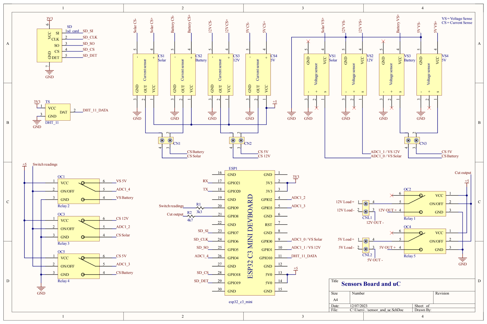
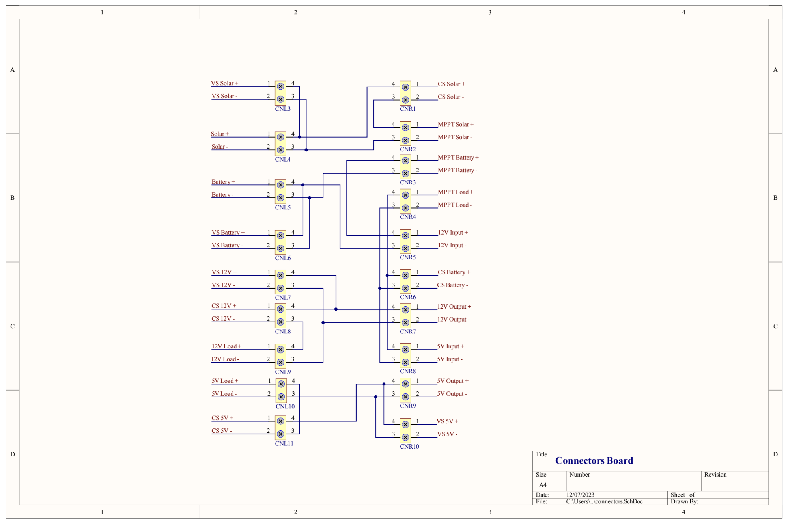
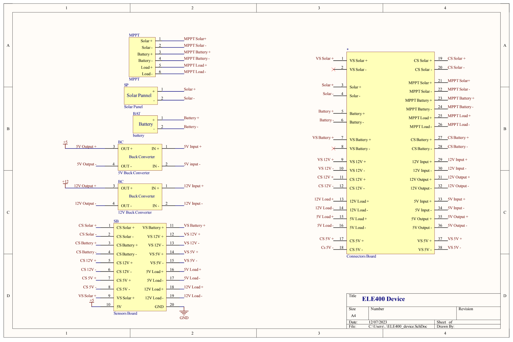

Hardware
Le système est composé de trois (3) parties principales : le circuit de contrôle et de prise de mesures, les connecteurs et le boitier.
Le circuit de contrôle sert de cerveau au système. Il comprend le microcontrôleur, les capteurs, les relaies et la carte SD. Les composants suivants ont les fonctionnalités suivantes :
Composant |
Utilité |
|---|---|
ESP32-C3-Mini |
Signaux de contrôle et transmission de l’information au serveur |
Capteurs |
Récolter des informations de tension, courant et température |
Relais |
Activer les sorties de tension et sélectionner des signaux de mesures de courant ou tension |
Carte SD |
Sauvegarder de l’information en cas de perte de connexion |
Voici le schéma détaillé de la manière dont ce circuit est construit.
La deuxième partie, les connecteurs, sert à faire les connections entre les gros composants du boitier. Lorsqu’il est question de « gros composants », il s’agit des capteurs de tension et courant, des « buck converters », du MPPT, des relais et des connecteurs de sortie. L’utilité principale était de pouvoir tester notre circuit sur une plaquette de prototypage avant de faire le circuit officiel. De plus, il est plus facile de briser des connections. Cela sera utile lors des tests puisqu’on peut remplacer un capteur courant par un multimètre facilement. Voici le schéma électrique des connecteurs :
Le boitier est l’assemblage total de la solution. Voici le schéma électrique :
